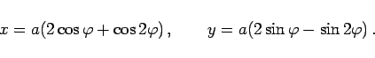
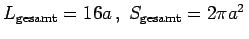
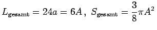

Hypozykloide wird eine Kurve genannt, die von einem Peripheriepunkt eines Kreises beschrieben wird, wenn dieser, ohne zu gleiten, auf der Innenseite eines anderen Kreises abrollt.
Die Gleichung der Hypozykloide, die Koordinaten der Scheitelpunkte und Spitzen, die Formeln für die Bogenlängen, die Flächeninhalte und die Krümmungsradien entsprechen denen der Epizykloide, es ist jedoch ,,+a`` durch ,,-a`` zu ersetzen. Die Anzahl der Spitzen entspricht für m ganzzahlig, rational oder irrational (stets ist m >1) der von der Epizykloide bekannten.
|  | (2.234a) |
Es gilt .
Es gilt .